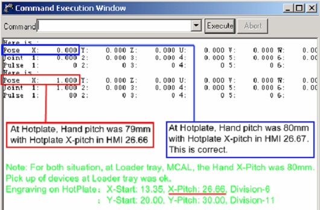
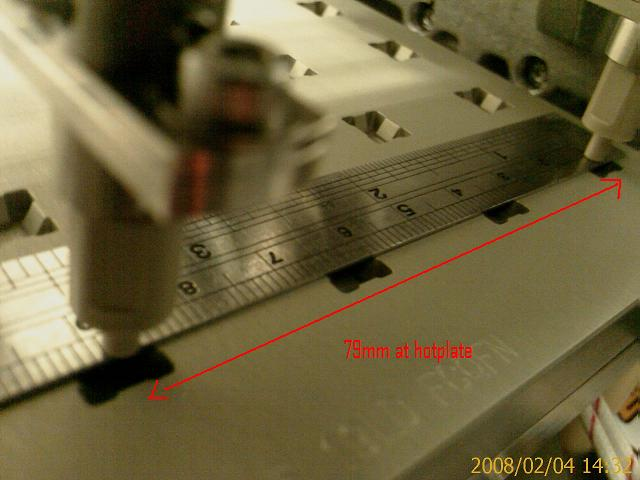
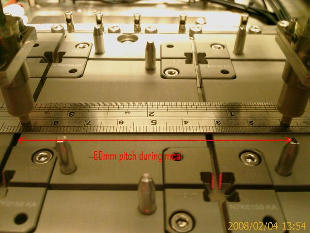

Technical Support Notes
Subject: NS-8080 Hotplate engraved X-Pitch 26.66mm(79mm Hand pitch issue)
Handler Model: NS-8080 S/N: 181417 (STATSChippac, evaluation)
Controller: RC520
Date: 1 Feb 2008
Symptom
At SCS, during NS8080 evaluation, for QFN 4x4.5 fine tuning, the Input arm Hand pitch was not at it 80mm pitch when it goes to Hotplate 1 and 2 for placement.
Hand pitch was at 80mm when mcal at Loader, ok.
Action
The engraved X-pitch of the Hotplate was 26.66mm. The hand pitch should be 80mm when placement of devices at hotplate. After Mcal, the hand pitch was 80mm but at hotplate during release to Hotplate the hand X-pitch was 79mm.
In SPEL, after select selrb 7 (for Input Arm Hand Open/Close), Mcal. For X pose, it showed 0mm with a measured 80mm Hand pitch, for Hotplate matrix in HMI X-pitch set as 26.67.
After change Hotplate matrix X-pitch to 26.66mm in HMI, and handler release device to Hotplate the Hand pitch was 79mm, in SPEL, the selrb7 pose X was 1mm.
|
Engraving on Hotplate for X-pitch was 26.66 |
|
Input Hand X Pitch after MCAL |
Input Hand X Pitch at Loader when pick devices |
Input Hand X Pitch at Hotplate when place devices |
Input Hand Open/Close X value in SPEL |
|
HotPlate X-Pitch in HMI |
26.66 |
80mm |
80mm |
79mm |
1mm |
|
HotPlate X-Pitch in HMI |
26.67 |
80mm |
80mm |
80mm |
0mm |



Remedy:
Change Hotplate matrix for X-Pitch to 26.67 in HMI, the hand pitch at Hotplate becomes 80mm.
Note:
It could be that the handler use Absolute value calculation for the Hand pitch at Hotplate.
Case 1) 26.66mm x 3 = 79.98mm =>Abs = 79mm
Case 2) 26.67mm x 3 = 80.01mm =>Abs=80mm
This problem as also experienced on 8080(S/N: 181415), demo unit for STM.
Cause
Remarks
EPSON has found problem (arithmetic processing trouble) on HMI software for this issue.
Meantime, Please temporary set 26.67 for X-pitch until software released.
It may be released by early March 08.
This bug was corrected in HMI version 1.91.